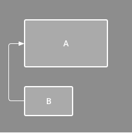
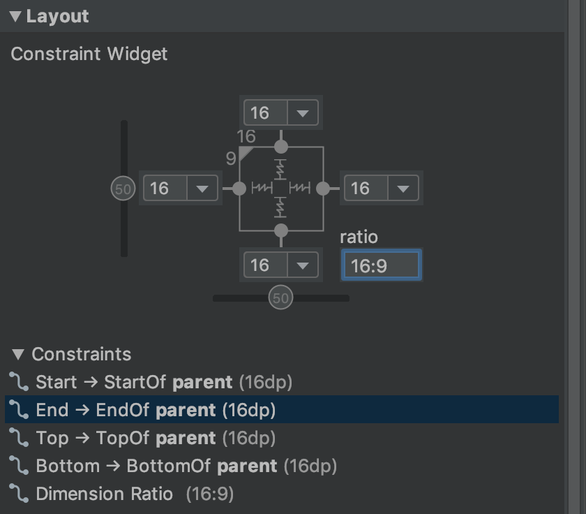

Figura 1: L’editor mostra la vista C davall de la A, però no té restricció vertical.
Figura 1: L’editor mostra la vista C davall de la A, però no té restricció vertical.#Crear IU responsiva amb ConstraintLayout.
ConstraintLayout et permet crear dissenys grans i complexos amb una jerarquia de vistes plana (sense grups de vistes niades). És similar a RelativeLayout quant a que es presenten totes les vistes d’acord amb les relacions entre les vistes del mateix nivell i el disseny de nivell superior, però és més flexible que RelativeLayout i més fàcil d’usar amb l’editor de disseny d’Android Studio.
Tota la potència de ConstraintLayout està disponible directament des de les eines visuals de l’editor de disseny, ja que la API de disseny i l’editor de disseny es van crear específicament per a funcionar en conjunt. Així, pots crear tot el teu disseny amb ConstraintLayout arrossegant i soltant elements, en lloc d’editar el XML.
En aquesta pàgina, s’inclou una guia per a crear un disseny amb ConstraintLayout en Android Studio 3.0 o versions posteriors. Si desitges obtindre més informació sobre l’editor de disseny, consulta la guia d’Android Studio sobre Com crear una IU amb l’editor de disseny.
Per a veure una sèrie de dissenys que pots crear amb ConstraintLayout, consulta el projecte d’exemples de Constraint Layout en GitHub.
https://www.youtube.com/watch?v=XamMbnzI5vE&feature=youtu.be
Per a definir la posició d’una vista en ConstraintLayout, has d’agregar almenys una restricció horitzontal i una vertical. Cada restricció representa una connexió o alineació amb una altra vista, el disseny de nivell superior o una guia invisible. Cada restricció defineix la posició de la vista al llarg de l’eix vertical o horitzontal, per la qual cosa cada vista ha de tindre un mínim d’una restricció per a cada eix, encara que sovint es necessiten més.
Quan soltes una vista en l’editor de disseny, aquesta roman on la deixes, fins i tot si no té restriccions. Tanmateix, això només serveix per a facilitar l’edició. Si una vista no té restriccions quan executes el seu disseny en un dispositiu, s’obri en la posició [0,0] (la cantonada superior esquerra).
En la figura 1, el disseny es veu bé en l’editor, però no hi ha restricció vertical en la vista C. Quan aquest disseny s’obri en un dispositiu, la vista C s’alinea horitzontalment amb les vores esquerre i dret de la vista A, però apareix en la part superior de la pantalla perquè no té restricció vertical.
Figura 1: L’editor mostra la vista C davall de la A, però no té restricció vertical.
 Figura 2: La vista C ara té una restricció vertical davall de la vista A
Figura 2: La vista C ara té una restricció vertical davall de la vista A
Si bé l’absència de restriccions no causa errors de compilació, l’editor de disseny mostrarà un error en la barra d’eines. Per a veure els errors i altres advertiments, fes clic en Show Warnings and Errors . Per a evitar que falten restriccions, l’editor de disseny pot agregar restriccions automàticament amb les funcions Infer Constraints i Autoconnect.
. Per a evitar que falten restriccions, l’editor de disseny pot agregar restriccions automàticament amb les funcions Infer Constraints i Autoconnect.
Per a usar ConstraintLayout en el teu projecte, segueix aquests passos:
repositories {
google()
}
dependencies {
implementation "androidx.constraintlayout:constraintlayout:2.0.0-rc1"
}
Ja està tot llest per a crear el disseny amb ConstraintLayout.
Per a convertir un disseny existent en un de ConstraintLayout, segueix aquests passos:
Obri el disseny existent en Android Studio i fes clic en la pestanya Design, en la part inferior de la finestra de l’editor. En la finestra Component Tree, fes clic amb el botó dret en el disseny i, després, en Convert layout to ConstraintLayout.

Figura 3: Menú per a convertir un disseny en ConstraintLayout
Per a iniciar un arxiu de disseny amb restriccions nou, segueix aquests passos:
Per a agregar una restricció, fes el següent:
El costat esquerre d’una vista està restringit al costat esquerre de l’element superior
 a connection en la secció Layout de la finestra Attributes, com es mostra en la figura.
a connection en la secció Layout de la finestra Attributes, com es mostra en la figura.
 Figura: La secció Layout de la finestra Attributes et permet crear connexions.
Figura: La secció Layout de la finestra Attributes et permet crear connexions.Quan es crea la restricció, l’editor li atorga un marge predeterminat per a separar les dues vistes.
Quan crees restriccions, recorda les següents regles:
Per a esborrar una restricció, pots optar per alguna de les següents alternatives:
Fes clic en una restricció per a seleccionar-la i, després, pressiona Delete.
Mantingues pressionat Control (Command en macOS) i, després, fes clic en un ancoratge de restricció. Quan la restricció es mostra de color roig, pots fer clic per a esborrar-la, com s’il·lustra en la figura.
 Figura: Quan una restricció es mostra de color roig, pots fer clic per a esborrar-la
Figura: Quan una restricció es mostra de color roig, pots fer clic per a esborrar-la
 Figura: Fes clic en un ancoratge de restricció per a esborrar-lo.
Figura: Fes clic en un ancoratge de restricció per a esborrar-lo.Si agregues restriccions oposades en una vista, les línies de restricció es tornen ondulades com un ressort per a indicar les forces oposades, segons es mostra en el vídeo. L’efecte és més visible quan la grandària de la vista es defineix com “Fixed” o “Wrap content”, i en aquest cas la vista se centra entre les restriccions. Si en canvi desitges que la vista s’expandisca per a ajustar-se a les restriccions, modifica la manera de grandària a “Match constraints”; finalment, si desitges mantindre la grandària actual, però moure la vista perquè no estiga centrada, ajusta el biaix (sesgo) de restriccions.

Pots usar restriccions per a aconseguir diferents tipus de comportament de disseny, com es descriu en les següents seccions.
Restringeix el costat d’una vista a la vora corresponent del disseny.
En la figura, el costat esquerre de la vista està connectat a la vora esquerra del disseny de nivell superior. Pots definir la distància des de la vora amb marge.
 Figura: Restricció horitzontal de l’element superior
Figura: Restricció horitzontal de l’element superior
Defineix l’ordre d’aparició de dues vistes, ja siga de manera horitzontal o vertical.
En la figura, la vista B està restringida a mostrar-se sempre a la dreta de A, i C està restringida a aparéixer davall de A. No obstant això, aquestes restriccions no impliquen alineació, per la qual cosa B pot moure’s cap amunt i a baix.
 Figura: Restricció horitzontal i vertical
Figura: Restricció horitzontal i vertical
Alinea la vora d’una vista amb la mateixa vora d’una altra vista.
En la figura, el costat esquerre de B està alineat amb el costat esquerre de A. Si desitges alinear els centres de les vistes, crea una restricció en tots dos costats.

Pots compensar l’alineació arrossegant la vista des de la restricció cap a dintre. Per exemple, en la figura següent, es mostra la vista B amb 24 dp de desplaçament en l’alineació. El desplaçament està definit pel marge de la vista restringida.

També pots seleccionar totes les vistes que vols alinear i, després, fer clic en Align  en la barra d’eines per a seleccionar el tipus d’alineació.
en la barra d’eines per a seleccionar el tipus d’alineació.
Alinea la línia de base de text d’una vista amb la línia de base de text d’una altra.
En la figura, la primera línia de B està alineada amb el text de A.
Per a crear una restricció de línia de base, fes clic amb el botó dret en la vista de text que desitges restringir i, després, fes clic en Show Baseline. Després, fes clic en la línia de base de text i arrossega-la fins a una altra línia de base.

Pots agregar una guia vertical o horitzontal en la qual siga possible restringir les vistes; la guia serà invisible per als usuaris de l’aplicació. Pots col·locar la guia dins del disseny segons les unitats de dp o percentatge, en relació amb la vora del disseny.
Per a crear una guia, fes clic en Guidelines en la barra d’eines i, després, en Add Vertical Guideline o Add Horitzontal Guideline.
Arrossega la línia puntejada per a canviar la posició i fes clic en el cercle que està en la vora de la guia a fi d’activar o desactivar la manera de mesurament.

Com succeeix amb les guies, una barrera és una línia invisible respecte de la qual pots restringir vistes. No obstant això, la barrera no defineix la seua pròpia posició, sinó que es desplaça en funció de la posició de les vistes que conté. Això és útil si desitges restringir una vista a un conjunt de vistes en lloc d’una vista específica.
Per exemple, en la figura es mostra que la vista C està limitada al costat dret d’una barrera. La barrera s’estableix en l’“extrem” (o el costat dret en un disseny d’esquerra a dreta) de la vista A i la vista B. D’aquesta manera, el desplaçament de la barrera depén de si el costat dret de la vista A o la vista B és el que està més a la dreta.


Per a crear una barrera, segueix aquests passos:
Ara pots crear una restricció des d’una altra vista fins a la barrera.
També pots restringir a la barrera les vistes que estan dins de la barrera. D’aquesta manera, pots assegurar-te que totes les vistes de la barrera sempre estiguen alineades entre si, encara que no sàpies quina de les vistes serà la més llarga o la més alta.
També pots incloure una guia dins d’una barrera a fi de garantir una posició “mínima” de la barrera.
Quan agregues una restricció a banda i banda d’una vista (i la grandària de la mateixa dimensió és “Fixed” o “Wrap content”), la vista se centra entre les dues restriccions amb un biaix del 50% de manera predeterminada. Per a ajustar el biaix, arrossega el control lliscant en la finestra Attributes o arrossega la vista.
En canvi, si vols que la vista s’estire per a ajustar-se a les restriccions, canvia la grandària a “Match constraints”.
Pots usar els controladors de les cantonades per a canviar la grandària d’una vista, però aquesta acció fixa la grandària dins del codi a fi que la vista no canvie de grandària per a diferents continguts o grandàries de pantalla. Si vols seleccionar una manera de grandària diferent, fes clic en una vista i obri la finestra Attributes en el costat dret de l’editor.
Prop de la part superior de la finestra Attributes, es troba l’inspector de vistes, que inclou controls per a diversos atributs de disseny, com es mostra en la figura (disponible solo per a vistes en un disseny de restriccions).
Figura 14
Per a canviar la forma en què es calculen l’altura i l’ample, fes clic en els símbols que s’indiquen amb la llegenda 3 en la figura. Els símbols representen la mode de grandària de la següent manera (fes clic en el símbol per a alternar entre les diferents configuracions):
 Fixed: Has de definir una dimensió específica en el quadre de text de baix o canviar la grandària de la vista en l’editor.
Fixed: Has de definir una dimensió específica en el quadre de text de baix o canviar la grandària de la vista en l’editor. Wrap Content: La vista s’expandeix només el necessari per a ajustar-se al seu contingut.
Wrap Content: La vista s’expandeix només el necessari per a ajustar-se al seu contingut.No obstant això, si la dimensió determinada té una sola restricció, la vista s’expandeix per a ajustar-se al seu contingut. L’ús d’aquesta manera en l’ample o l’altura també et permet establir una proporció de grandària.
Nota: No pots usar match_parent per a cap vista en un ConstraintLayout. En canvi, has d’usar “Match Constraints” (0dp).
Pots establir la grandària de la vista en una proporció, com 16:9, si almenys una de les dimensions de la vista està configurada com “Match Constraints” (0dp). Per a habilitar la proporció, fes clic en Toggle Aspect Ràtio Constraint (llegenda 1 en la figura anterior) i, després, ingressa la proporció d’ample:altura en l’entrada que es mostra.
Si tant l’ample com l’altura estan configurats per a ajustar-se a les restriccions, pots fer clic en Toggle Aspect Ràtio Constraint a fi de seleccionar quina dimensió es basa en una proporció de l’altra. L’inspector de vistes connecta les vores corresponents amb una línia contínua per a indicar quina vista s’estableix com a proporció.
Per exemple, si estableixes tots dos costats com “Match Constraints”, fes clic en Toggle Aspect Ràtio Constraint dues vegades per a definir l’ample com a proporció de l’altura. Ara la grandària total depén de l’altura de la vista (que es pot definir de qualsevol forma), com es mostra en la figura.

Per a assegurar-te que totes les vistes estiguen espaiades de manera uniforme, fes clic en Margin  en la barra d’eines a fi de seleccionar el marge predeterminat per a cada vista que agregues al disseny. Qualsevol canvi que realitzes en el marge predeterminat s’aplicarà només a les vistes que agregues a partir d’aqueix moment.
en la barra d’eines a fi de seleccionar el marge predeterminat per a cada vista que agregues al disseny. Qualsevol canvi que realitzes en el marge predeterminat s’aplicarà només a les vistes que agregues a partir d’aqueix moment.
Per a controlar el marge de cada vista en la finestra Attributes, fes clic en el número de la línia que representa cada restricció (en la figura 14, la llegenda 4 mostra que es va establir el marge inferior en 16 dp).

Tots els marges que ofereix l’eina són factors de 8 dp, la qual cosa t’ajudarà a alinear les vistes amb les recomanacions de quadrícula quadrada de 8 dp de Material Design.
Una cadena és un grup de vistes que estan vinculades entre si amb restriccions de posició bidireccionals. Dins d’una cadena, es poden distribuir les vistes de manera horitzontal o vertical.

Les cadenes es poden dissenyar d’una de les següents maneres:
La vista de “extrem” de la cadena (la situada més a l’esquerra en una cadena horitzontal i més amunt en una cadena vertical) defineix l’estil de la cadena en XML. No obstant això, pots seleccionar qualsevol vista en la cadena i fer clic en el botó de la cadena que apareix davall de la vista per a alternar entre Spread, Spread inside i Packed.
Per a crear una cadena, selecciona totes les vistes que s’inclouran en ella, fes clic amb el botó dret en una de les vistes, selecciona Chains i, després, Center Horizontally o Center Vertically, com es mostra en el vídeo:
A continuació, s’esmenten altres qüestions que has de tindre en compte quan uses cadenes:
En lloc d’agregar restriccions a cada vista a mesura que les col·loques en el disseny, pots moure cada vista a les posicions que desitges i, després, fer clic en Infer Constraints per a crear restriccions de manera automàtica.
Infer Constraints analitza el disseny a fi de determinar el conjunt de restriccions més efectiu per a totes les vistes. La seua tasca és restringir les vistes a les seues posicions actuals i, al mateix temps, brindar flexibilitat. Possiblement has de realitzar alguns ajustos per a assegurar-te que el disseny responga com ho desitges davant diferents grandàries de pantalla i orientacions.
Autoconnect to parent és una funció separada que també pots habilitar. Si l’habilites, quan agregues vistes secundàries a una superior, aquesta funció crearà automàticament dues o més restriccions per a cada vista a mesura que les agregues al disseny, però només quan siga apropiat restringir la vista al disseny de nivell superior. La connexió automàtica no crea restriccions per a altres vistes del disseny.
La connexió automàtica està inhabilitada de manera predeterminada. Per a habilitar-la, fes clic en Enable Autoconnection to Parent en la barra d’eines de l’editor de disseny.